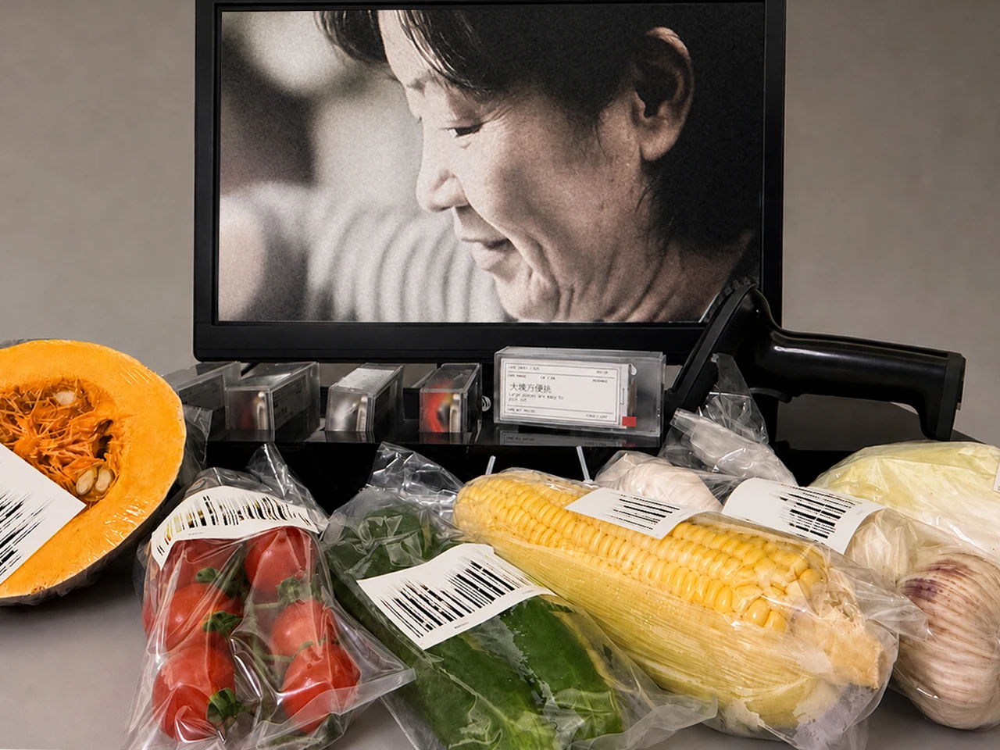
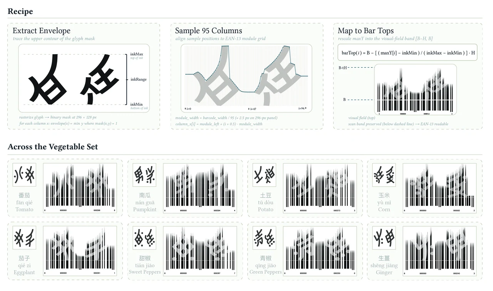
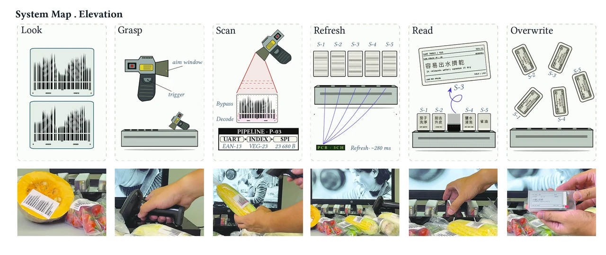
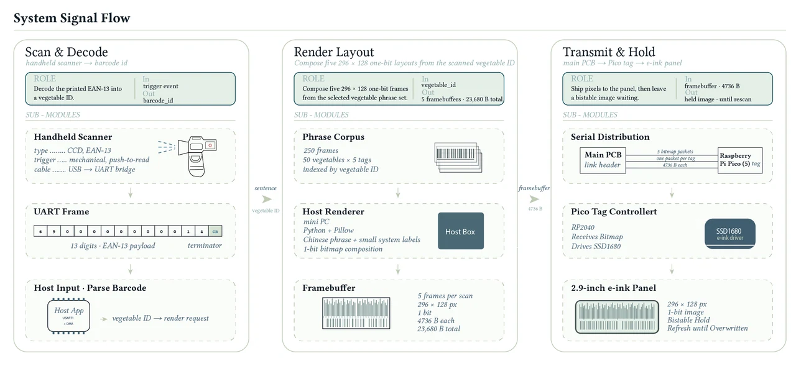
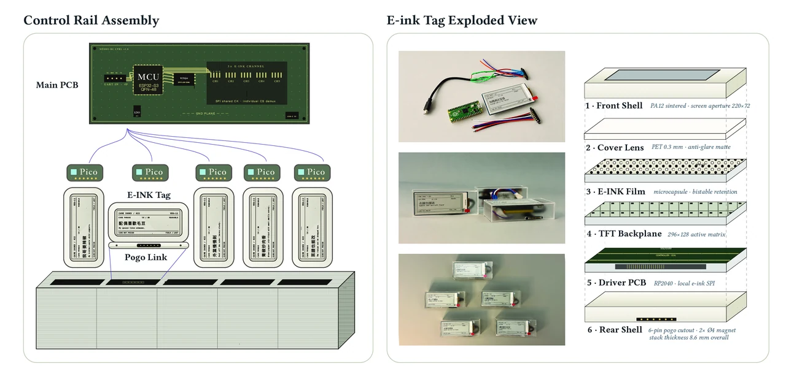
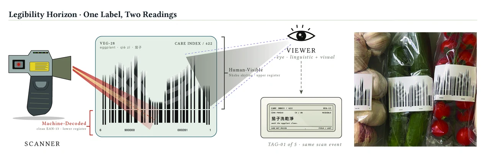
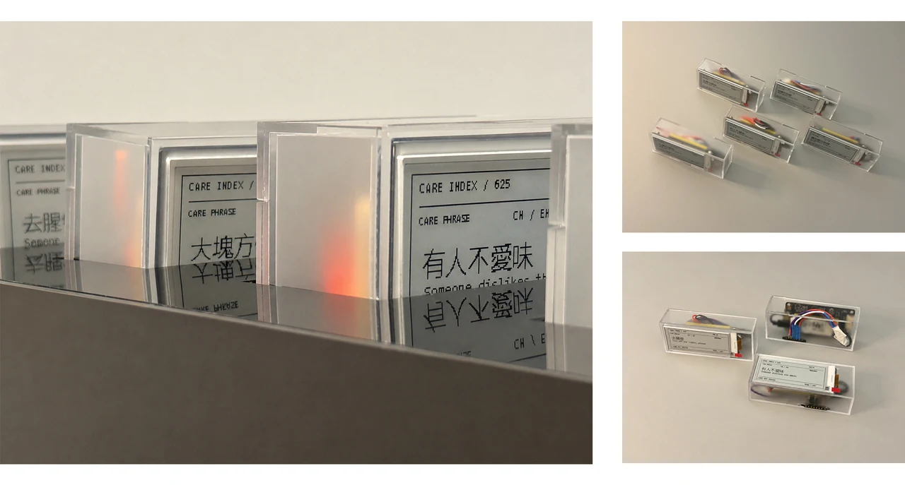

INT–β: Someone Cooked for You
Tools & Technologies: EAN-13 barcode system, Noto Traditional Nüshu, OpenType.js, handheld barcode scanner, custom PCB, Raspberry Pi Pico, 2.9-inch e-paper displays, SPI Flash, deterministic glyph mapping, custom acrylic rail system
Under review at TEI 2027 · Work in Progress
Introduction
Someone Cooked for You puts household cooking accounts on five removable electronic paper price tags. Scanning a vegetable calls up phrases edited from interviews with 65 home cooks.
Six labeled vegetables sit beside a handheld scanner. Each label combines a working EAN-13 barcode with contours derived from Nüshu glyphs. Visitors can lift a tag and read it in the hand; the words remain visible until it is returned and updated.
The project asks how a small display can carry both a cooking step and the person it is for.

Concept
A checkout record identifies a vegetable and its price. Preparing it at home also involves particular people: cooking longer for an elder’s teeth, or setting aside a portion for a child who avoids spice.
Nüshu circulated among women in Jiangyong, Hunan, and many texts addressed a particular person. This history informs the project’s interest in whom a cooking phrase is for. Glyph contours supply the label’s visual forms; contemporary household interviews supply the displayed words.



System
Dual-Register Barcode
The lower band preserves the 95-module EAN-13 code, its guard bars, quiet zones and digits. Above it, the bar tops follow selected Nüshu glyph contours. The scanner reads the product number.
Scan
The visitor aims the handheld scanner at the lower barcode band.
Index
The decoded number identifies a vegetable and its stored set of five phrases.
Refresh
The controller sends one pre-rendered phrase image to each connected tag.
Read
The visitor lifts a tag. Electronic paper retains its image without power, allowing the words to be read at a chosen distance and angle.
Return
Returning the tag reconnects it for later updates. A tag still in someone’s hand keeps its earlier phrase while connected tags change. Its vegetable ID identifies the phrase set.
Look → Grasp → Scan → Refresh → Read → Return
One Label, Two Readings
OpenType.js samples Noto Traditional Nüshu glyph outlines into 95 columns to shape the upper bar contour. A vegetable ID connects each label to its edited phrase set; scanning retrieves those phrases from storage.


Household Cooking Phrases
Over six months, 65 home cooks were interviewed about preparation routines and adjustments for another person’s body or taste. Structured written notes were used anonymously with consent.
The resulting 250 phrases form 50 vegetable sets. Thirty-three sets draw on accounts about the same vegetable; seventeen adapt steps or concerns from similar ingredients.
Comparing two sets with their sources revealed what shortening changed. The small bok choy phrases kept washing, trimming and cooking steps, but omitted a respondent’s wife and her weak stomach. “Tender hearts for family” compressed a story about a mother giving the tender leaves to her family and eating the older leaves herself.
The eggplant phrases retained preparation steps and the reason for steaming—saving oil—but omitted the older people the dish was intended to suit. The edits preserved actions more consistently than the people behind them.
Final Prototype
The installation combines a USB scanner, custom PCB, five Raspberry Pi Pico controllers and five removable 2.9-inch electronic paper tags. Acrylic cases and magnetic Pogo Pin connectors support lifting and returning each tag.
Five 296 × 128-pixel images take approximately 280 ms to transfer and dispatch; the displays then refresh. The exhibition version stores these images in SPI Flash. Bench checks covered lookup, reconnection and image retention after removal.

Exhibition
The installation was shown with six vegetables and a short scanner instruction. Around fifty visitors took part during six selected hours of observation. They scanned, waited for the refresh, and lifted a tag to read for about ten to twenty seconds.
Two recorded responses connected phrases to family memories. “Soak briefly in salt water” reminded one visitor of her mother preparing pineapple and leaving a note on her fridge. A phrase about cooking tough stems longer reminded another of her grandmother. These individual responses suggest how readers can bring their own experiences to the words.
Reflection
Who remains named in an edited phrase, and whom does a reader remember?
In the two sets examined, cooking steps survived editing while people and reasons were omitted or generalized. One visitor nevertheless recalled her mother from a phrase that had lost the person in its source account. That memory does not establish that the original cook’s circumstances were conveyed.
The next stage asks whether naming the person a meal is for changes what readers notice, and whether lifting a tag changes how they read the same words.